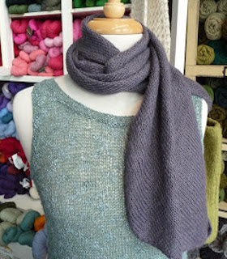

We at Close Knit have put together a collection of free patterns for you to enjoy. Ya da, ya da, ya da. Knit knit knit!
-
Chloe Cowl
-

Firefly Bias Scarf
-
Foggy Noggin Hat
-
Garter Goodness
-
Gradient Cowl
-
Hottie Cozy
Kathmandu Cowl
Knitcol Cowl
Leah Glove
Miss Violet Cowl
Noromania Blanket
Petite Honeycomb Cowl
Ruched Cowl
Seed Stitch Cowl
Silk Scarf
Sugar & Spice Knit Dress
Tiny Baby Hat
Waffle Hat
Wake Me Up Tea Cozy
- HOURS
M-F 10a-6p Sat 10a-5p Sun 11a-4p
Knit Night: W eves 6p-9p - LOCATION
2140 NE Alberta Street
Portland, OR 97211 - PHONE
© 2014 Close Knit. All Rights Reserved.